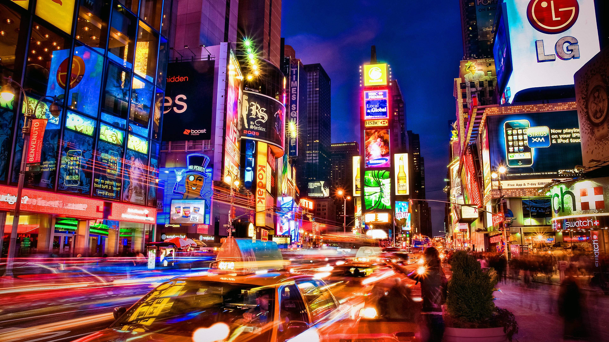
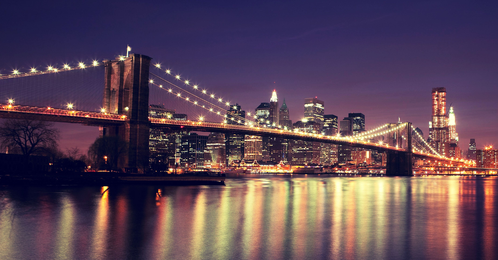
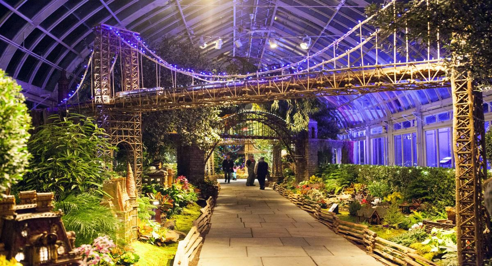

THE 5 BOROUGHS OF NEW YORK CITY
NYC has five boroughs the Bronx, Brooklyn, Manhattan, Queens and Staten Island. Each with dozens of neighborhoods
lending their own local flavor. Here's a quick tour to help you decide where to head next.
1 / 5

MANHATTAN, Time Square
Manhattan, is the most densely populated of the five boroughs of New York City. Often referred to by residents
of the New York City area as the City. Manhattan serves as the city's economic and administrative center, cultural
identifier, and historical birthplace. There are many famous place in Manhattan, such as Central Park,
The Statue of Liberty, Empire State Building, etc.
2 / 5

BROOKLYN, Brooklyn Bridge
Brooklyn, located in the U.S. state of New York, the most populous county in the state, and the second-most densely
populated country in the United States. It is New York City's most populous borough. It's a hotbed of culture, art,
music, and food. Dozens of art galleries and music venues showcase the works of Brooklyn's many creatives.
Sites like the Brooklyn Bridge as well as McCarren and Prospect parks.
3 / 5

QUEENS, Queens Museum of Art
The largest of NYC's boroughs, and with nearly half its residents foreign born, Queens is truly a world apart.
But other than downtown Flushing, Astoria and Long Island City, it's mostly a suburban, low-rise sprawl and a
patchwork of diverse communities.
4 / 5

BRONX, New York Botanical Garden
The Bronx is a borough of New York City, coterminous with Bronx County, in the U.S. state of New York,
the third-most densely populated county in the United States. It is the only borough predominantly on the U.S. mainland.
Most people already know the three big attractions in the Bronx – Yankee Stadium,
New York Botanical Garden and the Bronx Zoo.
5 / 5

Staten Island, Staten Island Yankees
Staten Island is the southernmost of New York City's 5 boroughs. The most suburban of the five boroughs,
Staten Island is often neglected as a tourist destination. Take a ride from Manhattan on the Staten Island
Ferry and get some of the best views of New York City for free, then stick around and see what Staten Island.
❮
❯